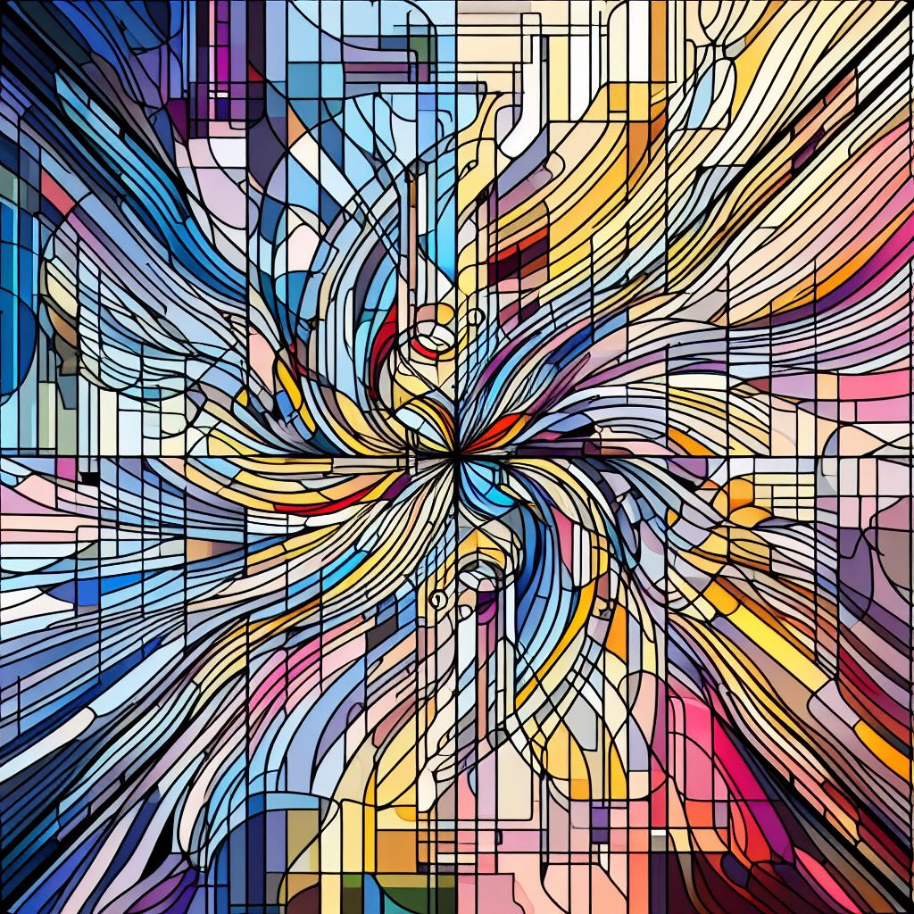

I am a mathematician. From February 2026 I will be a postdoctoral fellow at MPIM. Previously I was a research associate at the University of Glasgow mentored by Michael Wemyss, and before that I was a PhD student at the Vrije Universiteit Brussel under the supervision of Michel Van den Bergh.
Broadly my interests are in algebraic geometry and categorical incarnations of this. My current research focusses on the interactions between commutative and noncommutative algebraic geometry, more precisely on noncommutative resolutions of various kinds with applications to noncommutative motives in mind. Lately, I have also been delving into the realm of tensor triangular geometry and thinking about generation in triangulated categories.
I also co-organise the online D.A.N.C.E. seminar, feel free to reach out if you are interested in giving a talk.
I can be contacted at: tdedeyn.maths [at] gmail.com
.
